While using rebib with a LaTeX document, one can use the following two options as per their needs :
1. Bibliography Converter
The bibliography converter will convert any LaTex or BBL file given as a path. This way, one can generate BibTeX from the embedded bibliography or BBL file.
rebib::biblio_converter(path_to_your_file)
#> working directory : /private/var/folders/24/8k48jl6d249_n_qfxwsl6xvm0000gn/T/RtmpNE2B9l/exampledir/standalone
#> bib entries : 6
#> Written BibTeX file : /private/var/folders/24/8k48jl6d249_n_qfxwsl6xvm0000gn/T/RtmpNE2B9l/exampledir/standalone/sample.bib2. Bibliography Aggregator
The bibliography aggregator will append the existing BibTeX file with bibliographic entries extracted from the LaTeX or BBL file.
The Flow Chart here visualizes the sequence.

A Flow chart of Bibliography Aggregation
#> Warning in dir.create(your_article_folder <- file.path(tempdir(),
#> "exampledir")):
#> '/var/folders/24/8k48jl6d249_n_qfxwsl6xvm0000gn/T//RtmpNE2B9l/exampledir'
#> already exists
# Suppose you have a example.bib file in your article path
cat(readLines(paste(your_article_path,"example.bib",sep="/")),sep = "\n")
#> @book{ihaka:1996,
#> author = {{Ihaka, Ross and Gentleman, Robert}},
#> title = {{R: A Language for Data Analysis and Graphics}},
#> publisher = {Journal of Computational and Graphical Statistics 3: 299--314},
#> year = {1996},
#> url = {https://doi.org/10.1080/10618600.1996.10474713}
#> }
# for files with BibTeX source as well as embedded entries
rebib::aggregate_bibliography(xfun::normalize_path(your_article_path))
#> Found Bib file example.bib
#> bibliography aggregation possible
#> Found Bib file example.bib
#> aggregation delta : 2
#> BibTeX file aggregated
cat(readLines(paste(your_article_path,"example.bib",sep="/")),sep = "\n")
#> @book{ihaka:1996,
#> author = {{Ihaka, Ross and Gentleman, Robert}},
#> title = {{R: A Language for Data Analysis and Graphics}},
#> publisher = {Journal of Computational and Graphical Statistics 3: 299--314},
#> year = {1996},
#> url = {https://doi.org/10.1080/10618600.1996.10474713}
#> }
#> @book{R,
#> author = {R {Core Team}},
#> title = {{R: A Language and Environment for Statistical Computing}},
#> publisher = {R Foundation for Statistical Computing Vienna Austria :},
#> year = {2016},
#> url = {https://www.R-project.org/},
#> isbn = {3-900051-07-0}
#> }
#> @book{Tremblay:2012,
#> author = {A.~{Tremblay}},
#> title = {{LMERConvenienceFunctions: A suite of functions to back-fit fixed effects and forward-fit random effects, as well as other miscellaneous functions., }},
#> publisher = {R package version 1.6.8.2},
#> year = {2012},
#> url = {http://CRAN.R-project.org/package=LMERConvenienceFunctions}
#> }